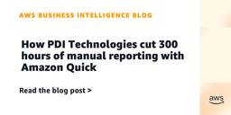

AWS Business Intelligence Blog
フィード

How PDI Technologies cut 300 hours of manual reporting with Amazon Quick
AWS Business Intelligence Blog
In this post, we share how PDI Technologies implemented Amazon Quick Sight to transform their business intelligence infrastructure, cutting manual reporting from hours to minutes and expanding analytics from one team to seven. The result is a modern technology foundation that supports company-wide analytics deployment while improving reporting efficiency across our organization.
1日前

AI-powered productivity comes to the West Coast
AWS Business Intelligence Blog
In this post, we share highlights from the LA Amazon Quick User Group meetup, held on May 13, 2026, in Santa Monica, California. We had 64 professionals attend the event, and attendees stayed well past the scheduled end time to continue conversations about agentic AI and Amazon Quick.
16日前
May 2026 Amazon Quick events
AWS Business Intelligence Blog
Amazon Quick helps business users make better decisions, faster and take action on them by unifying AI agents for research, insights, and automation into a single experience that understands your complete data context. To see all upcoming events, check out the events page on the Amazon Quick Community and watch our previous live learning sessions […]
3ヶ月前
May sessions of the Amazon Quick Learning Series
AWS Business Intelligence Blog
The Amazon Quick Learning Series is a free learning resource hosted by our Amazon Quick Community. We provide live weekly webinars to give users of all technical backgrounds an on-demand experience to learn from our technical experts. Session topics include new feature launches, best practices, and feature deep dives to improve your Amazon Quick user experience, empowering you to unlock all that Quick Suite has to offer.
3ヶ月前
April 2026 Amazon Quick events
AWS Business Intelligence Blog
Amazon Quick helps business users make better decisions, faster and take action on them by unifying AI agents for research, insights, and automation into a single experience that understands your complete data context. To see all upcoming events, check out the events page on the Amazon Quick Community and watch our previous Amazon Quick Learning Series sessions on demand here.
4ヶ月前
Amazon Quick user group explores agentic AI for productivity
AWS Business Intelligence Blog
On January 27, 2026, the Austin Amazon Quick User Group held its first meetup of the year. In this post, we walk through the key insights from this meetup, including hands-on workshops for building AI agents, a real customer case study showing 85% cost reduction, and resources to get started with Amazon Quick in your organization.
4ヶ月前
Create centralized monitoring for Amazon Quick Suite administration
AWS Business Intelligence Blog
This post shows you how to build a comprehensive monitoring framework that gives you visibility into your Quick Suite environment through unified dashboards, automated data collection, and a chat agent.
5ヶ月前
Accelerating analytics and reducing costs: Maryland Benefits’ implementation of Amazon Quick Sight
AWS Business Intelligence Blog
In this post, we share how Maryland Benefits transformed its data analytics capabilities by implementing Amazon Quick Sight, resulting in significant improvements in reporting efficiency, decision-making speed, and cost optimization across our organization.
5ヶ月前
March 2026 Amazon Quick events
AWS Business Intelligence Blog
Amazon Quick helps business users make better decisions, faster and take action on them by unifying AI agents for research, insights, and automation into a single experience that understands your complete data context. To see all upcoming events, check out the events page on the Quick Community and watch our previous Amazon Quick Learning Series sessions on demand here.
5ヶ月前
Building a serverless Amazon Quick Suite report delivery solution for non-Quick Sight users
AWS Business Intelligence Blog
In this post, we show you how to implement a serverless solution to deliver Quick Sight reports to non-Quick Sight users using AWS services. The solution tracks and persists the snapshot request details and output outside of Quick Sight.
6ヶ月前